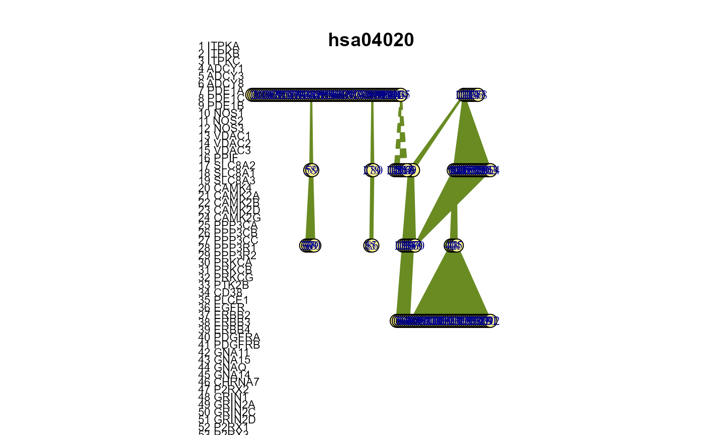
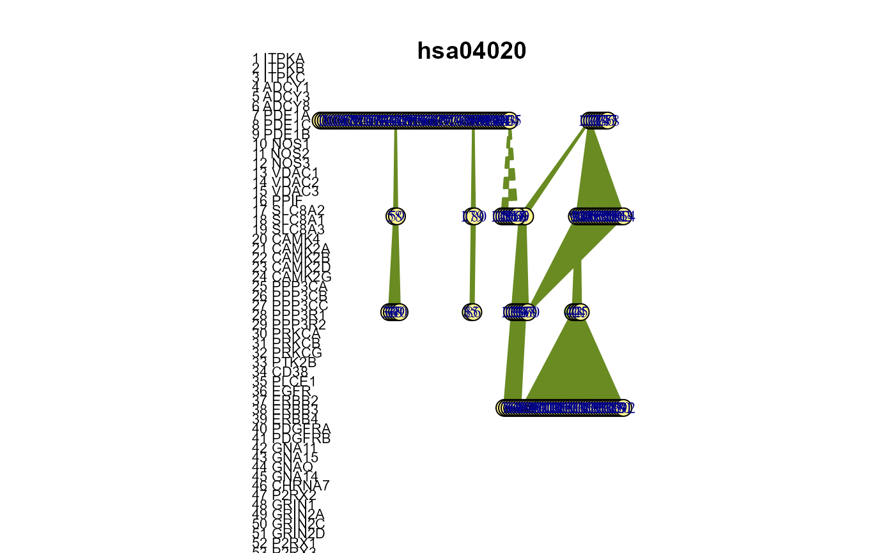

An S4 class to represent a gene-gene interaction network
pathway-class.RdAn S4 class to represent a gene-gene interaction network
pathway is the pathway object constructor.
show displays the pathway object briefly
summary generates a pathway object summary including basic network properties.
pathway2igraph converts a pathway object into an
igraph object with edge attribute sign
analyze pathway network properties
get_genes is a helper function that extracts the gene names in a
pathway and returns a vector containing character
elements of gene names
plot visualizes the pathway as igraph object
sample_genes randomly selects effect gene in a
pathway according the betweenness centrality and (no -1) neighors
pathway(object, ...)
# S4 method for ANY
pathway(id, adj = matrix(0), sign = NULL)
# S4 method for pathway
show(object)
# S4 method for pathway
summary(object)
# S4 method for pathway
pathway2igraph(object)
# S4 method for pathway
analyze(object, ...)
# S4 method for pathway
get_genes(object)
# S4 method for pathway,missing
plot(
x,
y = NA,
highlight.genes = NULL,
gene.names = c(NULL, "legend", "nodes"),
main = NULL,
asp = 0.95,
vertex.size = 11,
vertex.color = "khaki1",
vertex.label.cex = 0.8,
edge.width = 2,
edge.color = "olivedrab4",
...
)
# S4 method for pathway
sample_genes(object, no = 3)Arguments
- object
An object of class
pathway-class- ...
Further arguments can be added to the function.
- id
A
characterrepesenting thepathwayid.- adj
A
matrixrespresenting the network adjacency matrix of dimension equaling the number of genes (1 interaction, 0 otherwise)- sign
A
numericvectorindicating the interaction type for each link (1 activation, -1 inhibition) in the interaction network for thepathway.- x
pathwayobject- y
missing (placeholder)
- highlight.genes
vector of gene names or node id's, which should be highlighted in a different color, default is
NULLso that no genes are highlighted- gene.names
character indicating whether the genes names should appear in a legend (
'legend'), as vertex label ('nodes'), or should be omitted (NA)- main
optional overall main title, default is
NULL, which uses thepathwayid- asp
a
numericconstant, which gives the aspect ratio parameter for plot, default is 0.95- vertex.size
a
numericconstant specifying the vertex size, default is 11- vertex.color
a
characterornumericconstant specifying the vertex color, default is 'khaki1'- vertex.label.cex
a
numericconstant specifying the the vertex label size, default is 0.8,- edge.width
a
numericconstant specifying the edge width, default is 2- edge.color
a
characterornumericconstant specifying the edge color, default is 'olivedrab4'- no
a
numericconstant specifying the number of genes to be sampled, default is 3
Value
pathway2igraph returns an unweighted igraph object with edge attribute sign
analyze returns a data.frame consisting of
- id
pathway id,
- vcount
number of genes,
- ecount
number of links,
- inh_ecount
number of inhibition links,
- density
network density,
- av_deg
average degree,
- inh_deg
average degree of inhibition links,
- diam
network diamter,
- trans
transitivity, and
- s_trans
signed transitivity (Kunegis et al., 2009).
get_genes returns a character vector of gene names extracted from adjacency matrix rownames.
sample_genes returns a vector of length no with
vertex id's of sampled genes
Methods (by generic)
analyze(pathway):get_genes(pathway):sample_genes(pathway):
Slots
idA
characterrepesenting thepathwayid, e.g. hsa00100 as used in the KEGG database.adjA
matrixrespresenting the network adjacency matrix of dimension equaling the number of genes (1 interaction, 0 otherwise)signA
numericvectorindicating the interaction type for each link (1 activation, -1 inhibition) in the interaction network for thepathway.
References
Details to the computation and interpretation can be found in:
Kolaczyk, E. D. (2009). Statistical analysis of network data: methods and models. Springer series in statistics. Springer.
Kunegis, J., A. Lommatzsch, and C. Bauckhage (2009). The slashdot zoo: Mining a social network with negative egdes. In Proceedings of the 18th international conference on World wide web, pp. 741-750. ACM Press.
Examples
# pathway object constructor
pathway(id="hsa04022")
#> An object of class pathway with id hsa04022
#>
#> Pathway with adjacency matrix of dimension 1:
#> [,1]
#> [1,] 0
# convert to igraph object
data(hsa04020)
str(hsa04020)
#> Formal class 'pathway' [package ".GlobalEnv"] with 0 slots
#> Named list()
#> ..$ id : chr "hsa04020"
#> ..$ adj : int [1:180, 1:180] 0 0 0 0 0 0 0 0 0 0 ...
#> .. ..- attr(*, "dimnames")=List of 2
#> .. .. ..$ : chr [1:180] "ITPKA" "ITPKB" "ITPKC" "ADCY1" ...
#> .. .. ..$ : chr [1:180] "ITPKA" "ITPKB" "ITPKC" "ADCY1" ...
#> ..$ sign: int [1:594] 1 1 1 1 1 1 1 1 1 1 ...
g <- pathway2igraph(hsa04020)
str(g)
#> Class 'igraph' hidden list of 10
#> $ : num 180
#> $ : logi FALSE
#> $ : num [1:297] 132 133 134 135 136 137 169 170 132 133 ...
#> $ : num [1:297] 3 3 3 3 3 3 3 3 4 4 ...
#> $ : num [1:297] 42 44 46 48 50 52 43 45 47 49 ...
#> $ : num [1:297] 0 1 2 3 4 5 6 7 8 9 ...
#> $ : num [1:181] 0 0 0 0 0 0 0 0 0 0 ...
#> $ : num [1:181] 0 0 0 0 8 16 24 30 36 42 ...
#> $ :List of 4
#> ..$ : num [1:3] 1 0 1
#> ..$ : Named list()
#> ..$ :List of 1
#> .. ..$ name: chr [1:180] "ITPKA" "ITPKB" "ITPKC" "ADCY1" ...
#> ..$ :List of 2
#> .. ..$ weight: num [1:297] 1 1 1 1 1 1 1 1 1 1 ...
#> .. ..$ sign : num [1:297] 1 1 1 1 1 1 1 1 1 1 ...
#> $ :<environment: 0x000002ce236250a8>
# analyze pathway network properties
data(hsa04020)
summary(hsa04020)
#> An object of class pathway
#>
#> 180 nodes and 297 links; 7 activations and inhibitions.
#>
#> Density: 0.01843575
#> Average degree: 3.3
#> Inhibition degree: 0.07777778
#> Diameter: 6
#> Transitivity: 0
#> Signed transitivity: 0
analyze(hsa04020)
#> id vcount ecount inh_ecount density av_deg inh_deg diam trans
#> 1 hsa04020 180 297 7 0.01843575 3.3 0.07777778 6 0
#> s_trans
#> 1 0
# extract gene names from pathway object
get_genes(hsa04020)
#> [1] "ITPKA" "ITPKB" "ITPKC" "ADCY1" "ADCY3" "ADCY8"
#> [7] "PDE1A" "PDE1C" "PDE1B" "NOS1" "NOS2" "NOS3"
#> [13] "VDAC1" "VDAC2" "VDAC3" "PPIF" "SLC8A2" "SLC8A1"
#> [19] "SLC8A3" "CAMK4" "CAMK2A" "CAMK2B" "CAMK2D" "CAMK2G"
#> [25] "PPP3CA" "PPP3CB" "PPP3CC" "PPP3R1" "PPP3R2" "PRKCA"
#> [31] "PRKCB" "PRKCG" "PTK2B" "CD38" "PLCE1" "EGFR"
#> [37] "ERBB2" "ERBB3" "ERBB4" "PDGFRA" "PDGFRB" "GNA11"
#> [43] "GNA15" "GNAQ" "GNA14" "CHRNA7" "P2RX2" "GRIN1"
#> [49] "GRIN2A" "GRIN2C" "GRIN2D" "P2RX1" "P2RX3" "P2RX4"
#> [55] "P2RX5" "P2RX7" "P2RX6" "PLCG1" "PLCG2" "SPHK2"
#> [61] "SPHK1" "PLCZ1" "MYLK4" "MYLK" "MYLK2" "MYLK3"
#> [67] "PLCD3" "PLCD1" "PLCD4" "ITPR1" "ITPR2" "ITPR3"
#> [73] "PHKA1" "PHKA2" "PHKB" "PHKG1" "PHKG2" "RYR1"
#> [79] "RYR2" "RYR3" "PLCB1" "PLCB2" "PLCB3" "PLCB4"
#> [85] "ORAI2" "ORAI1" "ORAI3" "CACNA1C" "CACNA1D" "CACNA1F"
#> [91] "CACNA1S" "CACNA1A" "CACNA1B" "CACNA1E" "CYSLTR1" "CHRM1"
#> [97] "CHRM2" "CHRM3" "ADRA1D" "ADRA1B" "ADRA1A" "AGTR1"
#> [103] "EDNRA" "EDNRB" "F2R" "GRM1" "GRM5" "GRPR"
#> [109] "HRH1" "HTR2A" "HTR2B" "HTR2C" "LHCGR" "NTSR1"
#> [115] "OXTR" "AVPR1A" "AVPR1B" "LTB4R2" "CYSLTR2" "PTAFR"
#> [121] "PTGER1" "PTGER3" "PTGFR" "BDKRB1" "BDKRB2" "TACR2"
#> [127] "TACR1" "TACR3" "TBXA2R" "TRHR" "CCKAR" "CCKBR"
#> [133] "CALML6" "CALML5" "CALM1" "CALM2" "CALM3" "CALML3"
#> [139] "TNNC2" "TNNC1" "SLC25A4" "SLC25A5" "SLC25A6" "SLC25A31"
#> [145] "ADCY2" "ADCY7" "ADCY9" "ADCY4" "ATP2A1" "ATP2A2"
#> [151] "ATP2A3" "CHRM5" "ADORA2A" "ADORA2B" "ADRB1" "ADRB2"
#> [157] "ADRB3" "DRD1" "DRD5" "HRH2" "HTR4" "HTR5A"
#> [163] "HTR6" "HTR7" "PLN" "PRKACA" "PRKACB" "PRKACG"
#> [169] "PRKX" "GNAL" "GNAS" "CACNA1I" "CACNA1H" "CACNA1G"
#> [175] "ATP2B1" "ATP2B2" "ATP2B3" "ATP2B4" "STIM2" "STIM1"
# plot pathway as igraph object
plot(hsa04020)
sample3 <- sample_genes(hsa04020, no = 3)
plot(hsa04020, highlight.genes = sample3)
 # sample effect genes
sample3 <- sample_genes(hsa04020, no = 3)
plot(hsa04020, highlight.genes = sample3)

sample5 <- sample_genes(hsa04020, no = 5)
plot(hsa04020, highlight.genes = sample5)
# sample effect genes
sample3 <- sample_genes(hsa04020, no = 3)
plot(hsa04020, highlight.genes = sample3)

sample5 <- sample_genes(hsa04020, no = 5)
plot(hsa04020, highlight.genes = sample5)